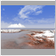
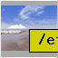
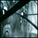

|
H O M E
|
WMDIA dockapp
About
"dia" is a german word for "Reversal film".This is a small dockapp, which does nearly nothing. It just creates an empty window with a 62x62 background pixmap.
When you click on the window, the command in the property "COMMAND" is executed. When you move the mouse in the window the text in the property "TOOLTIP" is shown as tooltip.
The main goal was to have a slideshow in a dockapp window, but it can also be used to show films, webcam in the dockapp or just a simple command button.
License AGPLv3: GNU Affero General Public License version 3
News
Fri Apr 29 19:53:03 CEST 2011
Version 1.4 released.
Made compatible with xcb version >= 1.7 and xcb-utils version
>= 0.3.8
Fix that tooltip blinks, when button command changes tooltip.
Sun May 23 15:03:16 CEST 2010
Version 1.03 released. Code cleanup, removed unused code parts.Mon Jun 22 13:32:18 CEST 2009
Version 1.02 released. Small bug fix.Mon May 4 14:37:32 CEST 2009
Version 1.00 released.Documentation
doxygen generated source documentation.Screenshots
  Downloads
Source Version 1.04 (GIT-ad5e22a) (with example scripts)wmdia-2011-04-29-19.tar.bz2
Source Version 1.03 (GIT-09d15e8) (with example scripts)
wmdia-2010-05-23-16.tar.bz2
Source Version 1.02 (GIT-0782b40) (with example scripts)
wmdia-2009-06-22-13.tar.bz2
Source Version 1.00 (GIT-b1c9379) (with example scripts)
wmdia-2009-05-04-15.tar.bz2
Johns johns98 @ gmx . net